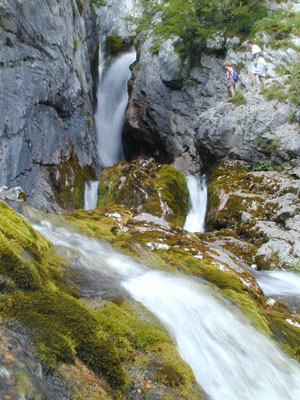

Slovenske reke in njihovi pritoki

SAVA
, 947 km (
v Sloveniji 221 km
)
Sora
Ljubljanica
Savinja
Krka
DRAVA
, 707 km (
v Sloveniji 142 km
)
Mislinja
Dravinja
Pesnica
SOČA
, 138 km (
v Sloveniji 96 km
)
Idrijca
Vipava